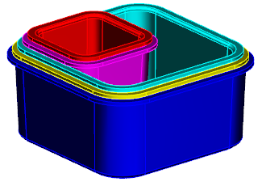

将装配设为工作部件。
在装配导航器中，右击部件 2并选择打开→完整组件。
NX 将完全加载部件 2，部件数据以及部件间链接都将进行更新以匹配部件 1的大小，但其它部件仍然未更新。

选择装配→WAVE→部件间链接浏览器。
在部件组的加载状态列中，您可以看到部件 1和部件 2为完全加载。
选择部件 2。
在选定部件中的部件间链接组的表格中，您可以看到部件 2有一个来自部件 1的链接的面。
点击关闭。